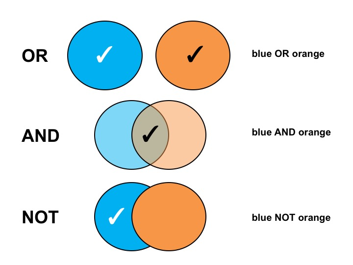

2 Developing Research Ideas
Actual footage of my first research meeting in grad school, via GIPHY.
In my experience as a former student and as a mentor, one of the most anxiety-producing moments in student life is when a new mentor says, “tell me about your ideas”. Why is this innocent prompt so terrifying? It might be because we have the wrong understanding of innovation and the origin of good ideas.
, by Steven Johnson. Also see his book, [*Ghost Map*](https://amzn.to/2DdExOu), a retelling of the story of John Snow and the 1854 outbreak of cholera in London.](images/wheregoodideas.jpg) Figure 2.1: Where Good Ideas Come From, by Steven Johnson. Also see his book, Ghost Map, a retelling of the story of John Snow and the 1854 outbreak of cholera in London.
Figure 2.1: Where Good Ideas Come From, by Steven Johnson. Also see his book, Ghost Map, a retelling of the story of John Snow and the 1854 outbreak of cholera in London.
In his book Where Do Good Ideas Come From?, Steven Johnson argues that good ideas are usually not eureka moments as we tend to imagine. Instead, good ideas are often the product of fertile environments where ideas are allowed to “connect, fuse, and recombine” over time. Have a listen.
I think two of Johnson’s insights are particularly relevant for us: the notion of the slow hunch and the adjacent possible. These concepts help to explain why generating research ideas can be so hard for students.
First, the student timeline is often hostile to innovation. Learning and assignments are compressed into semesters, but many ideas need more time to take shape. As Johnson writes:
Most great ideas first take shape in a partial, incomplete form. They have the seeds of something profound, but they lack a key element that can turn the hunch into something truly powerful…They start with a vague, hard-to-describe sense that there’s an interesting solution to a problem that hasn’t yet been proposed, and they linger in the shadows of the mind, sometimes for decades, assembling new connections and gaining strength.
Ideas take time to develop. This is the slow hunch concept. “But I have a research meeting with my mentor next Tuesday and she wants a list of ideas!!,” you say. Don’t panic. When you recognize that good ideas come from the accumulation of slow hunches, you will learn to enjoy the process. Your first idea will be the start of your journey, not the end. Your best ideas might not conform to this semester’s schedule, and that is OK.
Johnson borrows the metaphor of the adjacent possible from theoretical biologist Stuart Kauffman to illustrate the importance of connecting ideas.
The second insight is that we are always sitting on the edge of a breakthrough, but we need access to certain raw materials to unlock this discovery. This is the adjacent possible concept, which Johnson describes as follows:
Searching for the adjacent possible the night before your paper is due, via GIPHY
Think of [the adjacent possible] as a house that magically expands with each door you open. You begin in a room with four doors, each leading to a new room that you haven’t visited yet. Those four rooms are the adjacent possible. But once you open one of those doors and stroll into that room, three new doors appear, each leading to a brand-new room that you couldn’t have reached from your original starting point. Keep opening new doors and eventually you’ll have built a palace.
The first room is a metaphor for your initial understanding of a new topic. It is pretty empty because you are new, but your room has many potential doors to open—many strands of research to explore. When you open one door by searching the literature—and by connecting with other colleagues at talks, conferences, meet-ups—more doors appear. Figuring out which doors to walk through (and which ones to close) is a skill that comes with practice. Many literature searches can lead to apparent dead ends, but with each door you open, new hunches form. And when you have opened enough doors:
…one day [your hunches] are transformed into something more substantial: sometimes jolted out by some newly discovered trove of information, or by another hunch lingering in another mind, or by an internal association that finally completes the thought.
One suggestion is to adopt the “commonplacing” strategy for promoting discovery. It was all the rage in the Enlightenment Era. Read more about commonplace books in Good Ideas or in this 2010 lecture.
Johnson offers several suggestions for probing the adjacent possible and nurturing our slow hunches, pointing us to the importance of seeking out environments that will increase the likelihood that our ideas will collide with others. In this chapter, we will focus on how to open doors by searching the scientific literature.
2.1 Finding a Research Problem
Every study begins with a motivating research problem. A research problem is your study’s ikigai, its “reason for being”, to borrow a Japanese concept. A research problem should convey a clear reason for being, a clear sense of purpose. Typically, a research problem gets framed as the gap in our knowledge—a gap in the literature.
What’s a bad example of a research problem? How about studying what happens to mosquitos when they die? Maybe they go to mosquito heaven, but we cannot use systematic, public methods to gather data. Therefore, this is not a research problem we can solve. This will just have to remain a gap in the literature.
A defining characteristic of all research problems is that they are solvable (Leary 2012). To qualify as a research problem, we must be able to use systematic, public methods to gather and analyze data on the problem. For instance, research has shown that insecticide treated bed nets can prevent malaria infections in kids, but in many places kids are not sleeping underneath bed nets every night. Therefore, a research problem to solve is that we do not know how to encourage families to adopt and use this effective method of prevention.
So how do you find research problems worth studying?
Once you have studied a field for a few years, the answer is easy: You have cultivated a list of journals, conferences, funders, and colleagues whom you follow to keep up with the latest developments and priorities. You probably wake up most mornings with new ideas to explore.
Let’s assume this does not describe you. So where do YOU start?
Do you have any personal or work experience that can shape your thinking? Dr. Salim Abdulla, the distinguished malaria researcher profiled in Chapter 2, grew up in Tanzania and witnessed the damaging effects of the disease up close. This influenced his decision to make vector control his life’s work. Or take the example of XXX…
No experience? No problem. You are in good company. Most students I have mentored came to me with a general awareness about a health challenge, not a specific problem or research idea. “I’m interested in mental health”.
When you are just starting out, the key is to begin exposing yourself to ideas.
- Start reading the health and science sections of major publications like the New York Times and set news alerts for topics you find interesting
- Subscribe to newsletters from relevant professional associations or ‘learned societies’
- Attend research talks in-person or via online webinars hosted by universities, global health research organizations, or professional associations
- Look for experts active on social media
Above all else, start reading the scientific literature. A useful strategy for finding reading material is to visit the websites of the most popular journals in your discipline and browse recent issues. Not sure what journals to search? Check out Google Scholar’s “Top Publications” feature.
Figure 2.2: Google Scholar.
.](images/scholar.png)
Once you find a few articles of interest, try the following strategy for expanding your search and identifying gaps in the literature worth studying:
- Find the keywords: An article’s keywords often make great search terms. Look near the abstract.
- Read the Introduction: A good Introduction will frame gaps in our knowledge of a topic, so pull out a highlighter and get to work.
- Review the Discussion: The Discussion section may also hold new leads. Authors typically use the Discussion to link their study results to the existing literature to demonstrate how the results add to what is already known. A good Discussion section will also include limitations of the current study and might offer ideas for future research.
- Take note of the cited authors and journals: The Reference section may hold clues to your next great find. Search for more work by these authors and see what else these journals are publishing.
2.2 Searching the Literature
As you increase your exposure to research ideas and become familiar with journals that publish interesting work, you will be ready to begin searching the literature.
2.2.1 SELECTING A DATABASE
Most databases offer the option to create an account and save search strategies and results. This makes it easy to retrace and improve your search over time.
Your developing research interests will dictate where you should search. For biomedical and clinical research, your first stop should be PubMed. PubMed is a fantastic free resource from the US National Library of Medicine that searches the MEDLINE database. For interdisciplinary science and social science research, the Web of Science and Scopus databases are good choices, but both require paid subscriptions; check your local library for access. A free alternative is Google Scholar. Research librarians are an excellent resource to determine whether other databases are suitable for your topic (see here for a comprehensive list of databases).
2.2.2 GENERATING SEARCH TERMS
Once the proper database(s) is identified, specific search terms are needed. These usually coincide with the keywords published in related articles.
One of the reasons PubMed/MEDLINE is a great (free!) resource is that all articles indexed in the database are tagged by a team of indexers with at least a bachelor’s degree in a biomedical science. So unlike Google Scholar that only searches the text of articles, PubMed/MEDLINE also searches human-tagged meta-data.
When searching PubMed/MEDLINE, it is often helpful to look up the correct MeSH terms for your topic. MeSH, which stands for “Medical Subject Headings,” is a controlled vocabulary thesaurus that is used by a team of specialists at the National Library of Medicine to index articles in PubMed/MEDLINE. This thesaurus is helpful because there are many ways to refer to the same phenomenon. For instance, the MeSH term for “breast cancer” is “breast neoplasm.” A search for “breast neoplasm” in PubMed actually searches more than 30 entry terms, such as “Tumors, Breast”, “Mammary Neoplasms, Human”, and “Carcinoma, Human Mammary”.
A simple search for “breast neoplasm” will return a few hundred thousand results, so as you refine your research interests, you can add search terms and refine your strategy. The mnemonic PICO might help, especially if you are interested in clinical research.
| P | Patient, Population, or Problem |
| I | Intervention, Prognostic Factor, or Exposure |
| C | Comparison |
| O | Outcome |
Prognostic factor refers to covariates that could influence the prognosis of the patient. An exposure would be something that we think might increase the risk of an outcome.
PICO stands for Population/Problem, Intervention, Comparison, and Outcome. Let’s use PICO to develop a focused, searchable research question on preventing malaria during pregnancy.
The problem is malaria infections, and our population of interest is pregnant women living in malaria-endemic areas.
Not every clinical question involves testing of a treatment or intervention (“I”), but we will focus on these types of questions in this book. Let’s say we are interested in malaria chemoprevention, the use of an antimalarial medicine to prevent malaria infection.
The “C” in PICO, comparison, answers the question, “compared to what?” Chemoprevention compared to what? Maybe we are interested in comparing the preventive effects of an antimalarial medicine compared to a placebo.
The outcome (“O”) is our target. In this example, we are interested in whether chemoprevention prevents malaria infection. We can define this more specifically as parasitemia, the presence of malaria parasites in the blood.
Combining all of this information yields a research question like this one:
Among pregnant women living in malaria-endemic areas, is chemoprevention more effective than a placebo at preventing parasitemia?
2.2.3 DEVELOPING A SEARCH STRATEGY
Once you have identified initial search terms, it is time to build a query. Query construction is an iterative process, full of trial and error.
Figure 2.3: Boolean operators: AND, OR, NOT
Some basic Boolean operators are needed to conduct effective searches: AND, OR, NOT. For instance, consider the search PubMed runs when the terms “malaria OR pregnancy” are entered:
("malaria"[MeSH Terms] OR "malaria"[All Fields]) OR ("pregnancy"[MeSH Terms] OR "pregnancy"[All Fields])
These four terms are combined with OR, meaning we keep results that match any of these terms. PubMed returns more than 1 million results.
Of course, it would make more sense to search for “malaria AND pregnancy,” instead of “malaria OR pregnancy”, as we are interested in malaria among pregnant women:
("malaria"[MeSH Terms] OR "malaria"[All Fields]) AND ("pregnancy"[MeSH Terms] OR "pregnancy"[All Fields])
To further limit the results to humans, we could add AND “humans”[MeSH Terms] to the end. (“malaria”[MeSH Terms] OR “malaria”[All Fields]) AND (“pregnancy”[MeSH Terms] OR “pregnancy”[All Fields]) AND “humans”[MeSH Terms]
The first two terms and last two terms are combined separately with OR. These combinations are then combined with AND (notice the use of parentheses to segment the operations), shrinking the pool of results by 99%. The AND operator will always maintain or decrease the number of results.
Combining the components of the PICO questions and Boolean operators can be very useful. Consider our research question once more:
Among pregnant women living in malaria-endemic areas, is chemoprevention more effective than a placebo at preventing parasitaemia?
5 Tips for Searching PubMed. Duke University Medical Center Library & Archives (2012). https://tinyurl.com/y66y7uvx
Here is a reasonable search strategy in plain English:
-
P: (pregnancy
ORpregnant women)ANDmalaria endemic -
I:
ANDchemoprevention (to search for specific drugs, string them together withORs) -
C:
ANDplacebo -
O:
ANDparasitaemia
2.2.4 ACCESSING JOURNAL ARTICLES
This is often much harder than you would imagine, in part because scientific publishing is a big business. And boy do publishers have it good. Consider this lifecycle of an academic article:
- Private and public donors fund research
- Researchers conduct studies, write up the results, and send their work to a journal for free, often signing over the copyright
- Other scientists accept invitations from the journal to review the work pro bono
- Libraries pay the journal large sums of money to give members access the article
- Everyone else without library access is left to pay out of pocket
Plan S (the “S” stands for “shock”) might change the game. Developed in 2018, Plan S is an initiative to make all research funded with public funds to be published in open repositories or journals by 2020.
No wonder publisher profit margins have exceeded some of our most innovative companies, such as Apple, Facebook, and Amazon! Thankfully there has been a move toward open access publishing in recent years that has increased the number of freely available articles, but too much knowledge still remains trapped behind paywalls.
![The number and proportion of open access articles split between Gold, Green, Hybrid, Bronze and closed access [from 1950 - 2016; @piwowar2018]. To learn about the open access classification system, see [here](https://en.wikipedia.org/wiki/Open_access).](images/OA_by_year.png)
Figure 2.4: The number and proportion of open access articles split between Gold, Green, Hybrid, Bronze and closed access (from 1950 - 2016; Piwowar et al. 2018). To learn about the open access classification system, see here.
If you are affiliated with a university and struggle to find free access to an article, ask a librarian for help. Sometimes when you are browsing for articles off-campus from a non-university IP address, it will appear as if you do not have access. Ask for help connecting. If authentication is not the issue and you still cannot access an article, your institution might not subscribe to the journal. In this case, see if your library offers an inter-library loan program.
If you are affiliated with a university, you (probably) have access to a wide range of journals. Here is what you can do if find yourself on the other side of a paywall looking in:
- Search for the article in Google or Google Scholar and include the search term “pdf”. This might help you locate a copy outside the paywall.
- Search free cloud services like ResearchGate to see if the authors have posted a pre-publication copy as many journals permit.
- Try a browser extension like unpaywall to see if there is an open access version of the paper you seek.
- Try emailing the author directly or contacting them through a service like ResearchGate. You’ll find that most authors are willing to share their work with you. Usually searching for the author’s name and university will bring up a profile with contact information.
- You can also try your luck with the hashtag “icanhazpdf” on Twitter and see if a friend on the internet will help you out.
- Don’t pay for access until you have exhausted every other option.
2.2.5 WATCH OUT FOR JUNK SCIENCE
. 82% of the naughty list journals that responded published the bogus paper, mostly without any process that had a whiff of peer review. Surprisingly, 45% of the supposed real journals also published the fake results. One takeaway is that it can be hard to know if you are reading or submitting your work to a legitimate journal or a scam.](images/whoisafraid.png) Figure 2.5: Bohannon (2013) submitted a fake paper to 304 journals on a naughty list of probable predatory journals or a nice list of open access publishers. 82% of the naughty list journals that responded published the bogus paper, mostly without any process that had a whiff of peer review. Surprisingly, 45% of the supposed real journals also published the fake results. One takeaway is that it can be hard to know if you are reading or submitting your work to a legitimate journal or a scam.
Figure 2.5: Bohannon (2013) submitted a fake paper to 304 journals on a naughty list of probable predatory journals or a nice list of open access publishers. 82% of the naughty list journals that responded published the bogus paper, mostly without any process that had a whiff of peer review. Surprisingly, 45% of the supposed real journals also published the fake results. One takeaway is that it can be hard to know if you are reading or submitting your work to a legitimate journal or a scam.
If you search for studies on the open web (vs a database like PubMed), you are bound to come across articles published by a predatory publisher. These “journals” are happy to take your money and publish your work quickly with no peer review. Once you publish your first paper, you will become acquainted with them through the spam they send to your inbox daily. Here is a possible example. The Global Journal of Intellectual & Developmental Disabilities (sounds real, right?) will publish anything I send AND let me join their editorial board despite having no expertise or publishing record on the topic. As of this writing, the GJIDD does not appear to be indexed with PubMed (you can check the NCBI databases).

2.2.6 USE A REFERENCE MANAGER
The importance of using a software program for managing search results and references cannot be overstated. The manual collation and assembly of a bibliography is, simply put, a colossal waste of time.
You can choose from several reference managers. Zotero is free and open source, which makes it a good choice for collaborations. Most programs share these core features:
- Easily imports references from databases like PubMed; moves from the search results to the reference manager instantly
- Automatically retrieves full-text PDFs
- Syncs PDFs to tablets and phones
- Connects to word processing software; inserting references in papers is easy
- Automatically creates bibliographies based on works cited
- Instantly reformats in-text citations and references to different styles, such as APA, AMA, or Harvard
- Shares collections by automatically sync-ing via the Cloud to facilitate collaboration.
- Easily exports references to other reference managers
2.3 The Takeaway
Research ideas take time to develop. Be kind to yourself on days where it feels like your slow hunches are a bit too slow, and every door you open seems like a dead end rather than a portal to the adjacent possible. You will get there.
You can jumpstart the process by learning about interesting work. Attend talks, watch webinars, meet with mentors, talk with fellow students. Above all else, read the literature. When you are just starting out, try skimming widely read journals to get a sense of current developments in global health disciplines. Follow interesting leads by noting article keywords, inspecting reference lists, and seeking out clues authors leave you in the introduction and discussion.
Once you narrow your focus a bit, try searching scientific databases. If you wade into the open web, watch out for predatory journals masquerading as legitimate science (and hit delete on emails inviting you to publish your work, esteemed ladies and gentlemen).
And please, please use a reference manager to keep track of all the cool science you are reading.
Page built: 2020-07-11